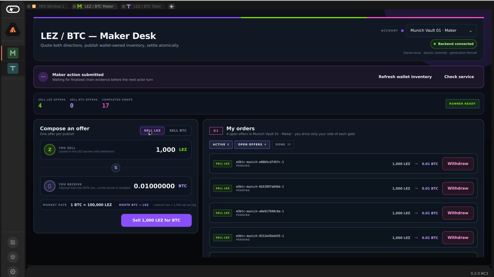
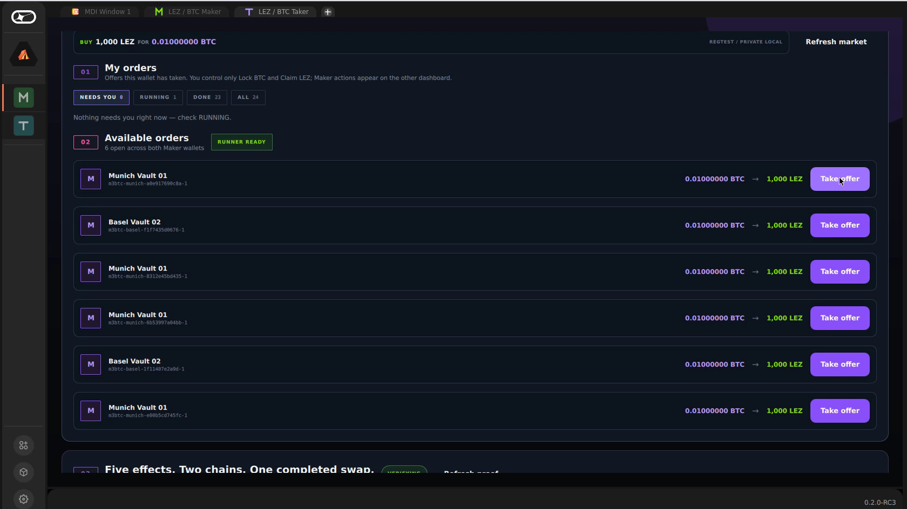
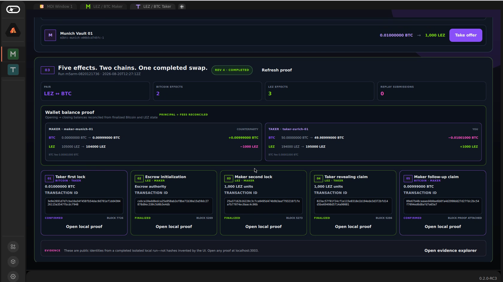
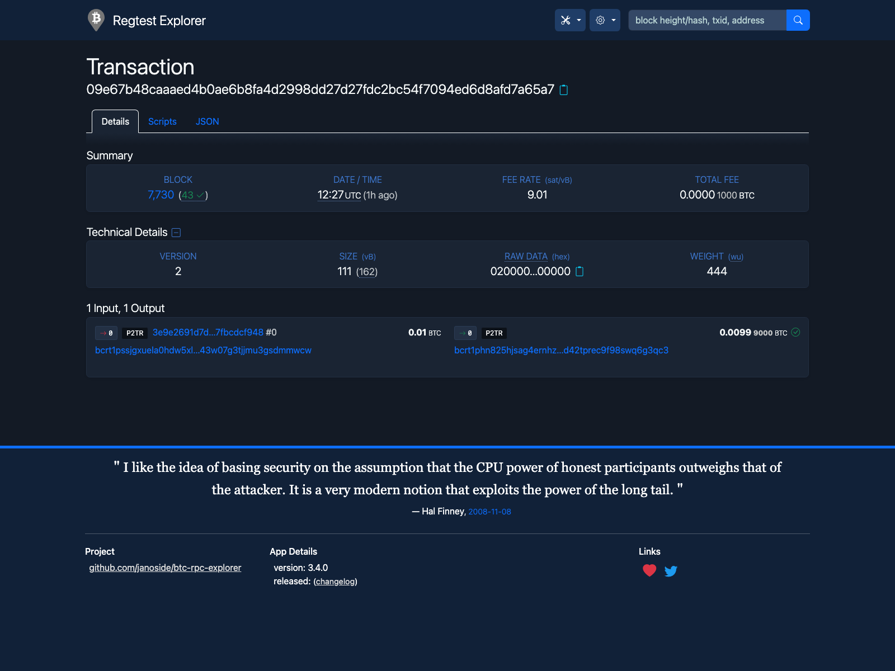
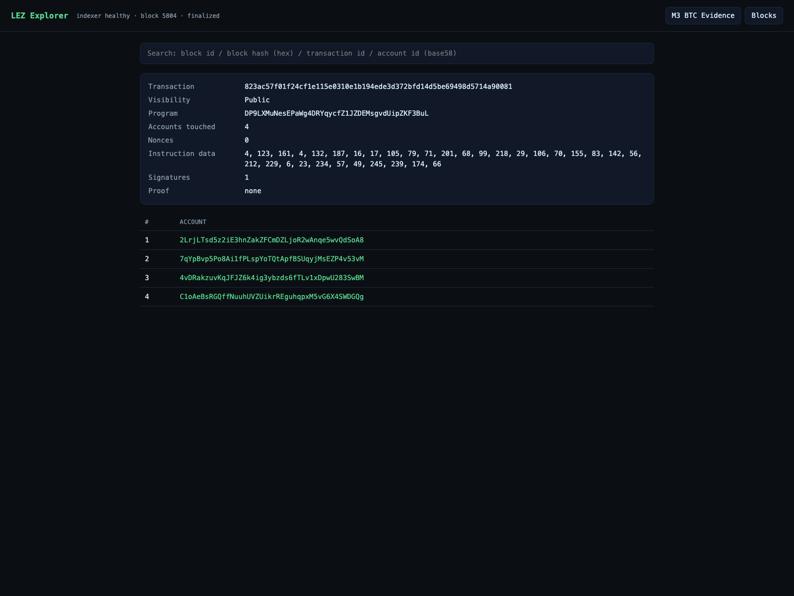
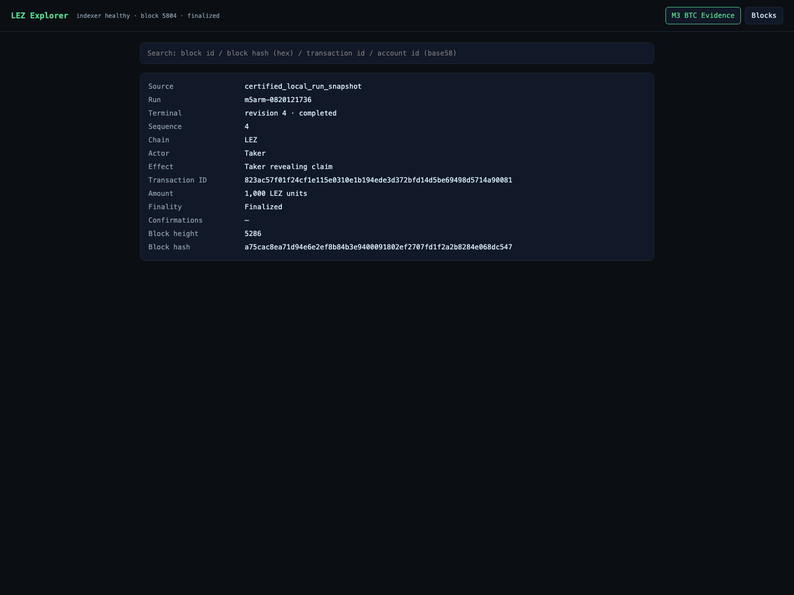
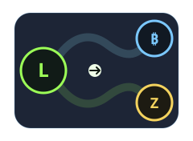

Protocol foundation
Roles, threat model, cryptographic primitives, deadlines, escrow custody, and SDK boundaries.
DESIGN + REVIEW PACKETBILATERAL ATOMIC SWAPS
PRIVATE LOCAL · BITCOIN CORE REGTEST · LEZ v0.2 DEVNET
Roles, threat model, cryptographic primitives, deadlines, escrow custody, and SDK boundaries.
DESIGN + REVIEW PACKETTaproot adaptor flow, actual-node settlement, ordered refunds, replay safety, and public evidence.
IMPLEMENTATION + EVIDENCESeparate Maker and Taker packages for offers, role-owned actions, progress, history, and proof.
PRODUCT SURFACE + TESTSM1
M1
Each role keeps its own keys, state and recovery authority. Bitcoin custody is a 2-of-2 MuSig2 output neither side can spend alone. The LEZ refund instruction takes no signer at all and can only pay the recorded depositor.
No bridge · no custodian · no third-party signerEvery swap is bilateral: two parties, and the exact amounts fixed in the countersigned agreement before either chain moves. No pooled capital, no LP position, no pricing curve.
No pool to drain · no shared inventoryOffers travel as signed envelopes from maker to taker. The taker verifies the maker's signature and the exact terms before consenting to anything. Nothing on that path takes custody or matches orders.
No venue custody · no matching engineM1 · TRANSPORT BOUNDARY
M1
96b7b22M3
M3 · TAKER SELLS 0.01 BTC FOR 1,000 LEZ
M3
// Two derived accounts per swap. Nobody chooses either address. #[account(init, pda = arg("swap_id"))] metadata: AccountWithMetadata, #[account(mut, pda = [literal("custody"), arg("swap_id")])] custody: AccountWithMetadata, #[account(signer)] depositor: AccountWithMetadata, // The claim key is bound to a LEZ account by hashing, not by assertion. const PUBLIC_ACCOUNT_ID_PREFIX: &[u8; 32] = b"/LEE/v0.3/AccountId/Public/\x00…"; fn witnessed_account_id(x_only_public_key: &[u8; 32]) -> AccountId { hasher.update(PUBLIC_ACCOUNT_ID_PREFIX); hasher.update(x_only_public_key); AccountId::new(hasher.finalize().into()) } // Three clauses. Each one blocks a different attack. if witnessed_account_id(&x_only_public_key) != account_id || account_id != aggregate_authority || account_id == state.claimant { return Err(custom_error(ERROR_ACCOUNT_BINDING, "aggregate witness account binding mismatch")); } // Refund takes no signer at all — and can only pay the depositor. pub fn refund_native(_ctx, metadata, custody, #[account(mut)] depositor, swap_id) -> SpelResult { if state.depositor != depositor.account_id { return Err(…) } }
M3
// The refund branch is one script: wait, then a single signature. let refund_script = Builder::new() .push_sequence(refund_delay.bitcoin_sequence()) .push_opcode(OP_CSV) .push_opcode(OP_DROP) .push_x_only_key(&refund_key.0) .push_opcode(OP_CHECKSIG) .into_script(); // One leaf, tweaked onto the two-party aggregate internal key P. let spend_info = TaprootBuilder::new() .add_leaf(0, refund_script.clone())? .finalize(&secp, UntweakedPublicKey::from(aggregate_key.0))?; let merkle_root = spend_info.merkle_root()?; let output_key = spend_info.output_key(); let output_key_parity = spend_info.output_key_parity().into(); // Refuse to build an output whose commitment does not verify. if !control_block.verify_taproot_commitment( &secp, output_key.to_x_only_public_key(), &refund_script) { return Err(P2trSwapOutputError::InvalidControlBlock); } let script_pubkey = ScriptBuf::new_p2tr_tweaked(output_key);
M3
M3
Either party stops.
No funds exposedAfter signed cutoff, two fresh absence reads, and a fresh unspent eligibility check:
Taker refunds first legSecond leg refunds first. Only after that exact refund is canonical:
First leg refunds laterMaker verifies and extracts, then must obtain the follow-up claim before the later boundary.
Liveness window mattersM3
two-direction-poctwo-direction-refundfirst-lock-refundsurvivor-claimoverlapping-two-swapM6
M6


M3 + M6
m5arm-0820121736



M6
Pair and price configuration, offer inventory, active swaps, history, role-local health.

Offer browsing, exact-term consent, progress, mutually exclusive terminal action, proof.
media/lez-btc-ui-swap-demo.mp4113 s · Basecamp UI · run m5arm-0825151914 · captions in .en.vttsubmission/README.mdMILESTONES · EVIDENCE · REPRODUCE · LIMITATIONSLEZ ⇄ BITCOIN · M1 + M3 + M6 SUBMISSION